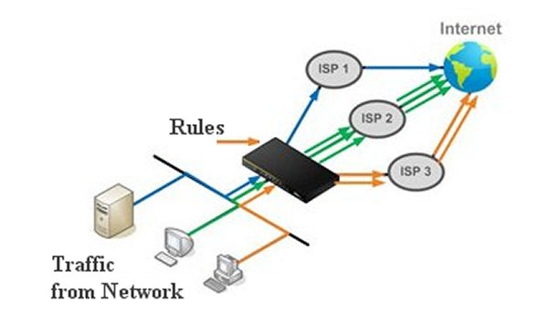

using multiple internet sources
Load Balancing
If you have multiple Internet sources, such as a Hotspot and a modem or two modems, then you will want to be able to manage those sources and direct traffic to them in a manner that suits you. This is known as Load Balancing.

Load Balancing is the black box between your network and the Internet. It takes the traffic from the network, applies the Rules to it and then sends it to the Internet through the different sources. It is strictly about directing traffic and does not deal with Internet speeds or bandwidth. Because this deals with traffic on an IP basis rather than a packet, it should more correctly be called Connection Balancing.
So how does Connection Balancing differ from Load Balancing? Proper Load Balancing manages the traffic from the router on a packet basis. These are the small chunks of data that the router is passing to the Internet. When a device accesses a web site it sends many packets back and forth to download the web page. Load Balancing will send each of these little chunks of data to the web site using different Internet sources. It balances the traffic over each Internet source on a byte by byte level.
Connection Balancing on the other hand does this by the IP Address of the traffic. All traffic from a single device going to a web site is sent there using a single Internet source. Traffic to another web site ( which has a different IP Address ) will be sent over a different Internet source. Instead of balancing traffic on a byte by byte basis it balances by connections to different IP Addresses. This means that the actual amount of traffic through each Internet source can be wildly different depending on how much bandwidth was used by each connection. In the long term the bandwidth will balance out but in the short term it may not be.
Connection Balancing Sections
Connection Balancing is made up of four sections. These sections allow the balancing to go from hardware level to the rules used to direct the traffic. The sections are :
- Rules
- Policies
- Members
- Interfaces
Rules are where the traffic from a connection to the Internet enters the Black Box of Connection Balancing. The Rules are checked one at a time until one is found that matches the specifics of the connection. A Rule can check the connection for up to six elements to try and make a match. These elements are
- Source IP - which device is making the connection
- Source Port - which port was used by the connection
- Destination IP - where the connection is headed
- IPset - URL of where the connection is headed
- Destination Port - which port at the destination IP is being used.
- Protocol - is it TCP or UDP traffic
Using combinations of these elements means you can identify specific traffic that is travelling over your Network and direct it to a specific Internet source. This Internet source is defined by the Policy attached to the Rule.
Policies are used to assign traffic from a Rule to a possible Internet source. A single Internet source can be assigned here or a group of sources assigned with one of these sources being chosen according to certain parameters. The Internet source or sources are defined by a list of Members.
Members are where each Internet source is is given a metric and a weight. These are used by the Policy to find which Internet source to use from the group of sources assigned to it. A Menber's metric determines the priority of the Internet source with lower numbers being a higher priority. The Internet source with the highest priority will be used first by the Policy. If two or more Members have the same metric or priority then the weight is used to divide up the number of connections sent to the Internet through each Internet source. Each Member has an Interface attached to it to indicate which Internet source it uses.
Interfaces are the low level definition of each Internet source. Each source is defined by the Network Interface that provides the Internet and a method of determining if the connection is up or down.
From this you see we start by matching traffic to a Rule and then work our way down through the possible Internet sources until we reach the Network Interface that provides the Internet. Each Rule will have its own Policy which in turn has its own group of Members which use the defined Interfaces. This allows customizing the Connection Balancing to fit many different situations.
Planning
When attempting to do Connection Balancing it is important to plan out each step of the procedure in advance. This minimizes the chance of errors occurring.
Planning the Rule is the first step.
Do we want all traffic to the Internet to use this Rule or do we want only specific traffic? A Rule that implements failover from one Internet source to another would have all traffic use the Rule. Having traffic from the Smart TV use one particular Internet source would require specifying details about the TV in the Rule. Rules are checked in the list from top to bottom with the first Rule that matches being used. The more specific the Rule is the closer to the top of the list it should be.
In a Rule that requires all traffic to go through it like that used for failover you would set these elements.
- Destination IP 0.0.0.0/0
- Protocol all
To have just traffic from a specifc device using the TCP protocol go through this Rule set the elements like this.
- Source IP 192.168.1.178
- Destination IP 0.0.0.0/0
- Protocol tcp
It is also possible to match traffic going to a URL rather than an IP Address. This is useful for Rules that involve sites like YouTube or Netflix which have a lrage number of IP Addresses. Instead of using the Destination IP address in the Rule we use the IPset entry. See the DNSMasq-IPset page to learn how to create IPsets.
By mixing and matching the elements of a Rule you can make it as general or a specific as you want. Just remember to put the more specific Rules at the top of the list so the more general rules don't match to traffic and route them through the wrong Internet source.
Planning the Policy is next.
The Rule we defined in the above step must have a Policy assigned to it to allow figuring out which Internet source to use. A Policy is just a list of Internet sources that have had a priority assigned to them and possibly a traffic ratio as well. In the case of our Smart TV we want it to use only a single Internet source so we would only have a single element in our list.
- Members Assigned Modem2
In our failover scenario we have multiple Internet sources so we need to assign them to the Policy.
- Members Assigned Modem1
- Members Assigned Hotspot
- Members Assigned WAN
By varying the number of Internet sources in a Policy we can fine tune where the traffic that matches the top level Rule will go.
Planning the Members comes next.
Members are an Internet source with a priority assigned to it. An Internet source can have multiple Members using it with different priorities. These would be used by different Policies to achieve different goals. In our Policy for the Smart TV we used a Member named Modem2. This uses a specific Internet source and would look like this. The metric and the weight are not used in this member since the Policy using it only has a single Member.
- Name Modem2
- Interface WAN2
- Metric 1
- Weight 1
In our failover Policy we have three Internet sources so we need to define three Members and assign them each a priority so the Policy knows in which order to use the Internet sources. If we want to use the WAN Internet source all the time but switch to the Hotspot Internet source if the WAN is down and finally use the Modem1 Internet source only if both the oters are down our members would look like this.
- Name WAN
- Interface wan
- Metric 1
- Weight 1
- Name Hotspot
- Interface wwan
- Metric 2
- Weight 1
- Name Modem1
- Interface wan1
- Metric 3
- Weight 1
Using Members we can create groups of Internet sources are used in a specified priority. Each Policy can have it's own group of members to define how we want traffic to be routed.
Planning the Interfaces is last.
This is where we define each Internet source and assign it the Network Interface that is to be used by it. This is the lowest level of Connection Balancing. These Interfaces are predefined in ROOter and consist of the following.
- wan1 Modem 1
- wan2 Modem 2
- wwan Hotspot Manager
- wan WAN
For Connection Balancing to have access to these Internet sources they must be enabled. In the Modem menu in the Connection Profile submenu on the Advanced tab you can Enable Load Balancing on Connection and the Interface for any modem using that Profile will automatically be enabled once the modem connects and disabled when the modem disconnects. The WAN and the Hotspot Manager must be enabled in the Interfaces section if they are to be used.
Since Connection Balancing depends on knowing if the Internet source is connected there is a large section devoted to setting up the ping test used to determine this. This can be tailored to each Interface to ensure that the connection status is known.
In summary, we have a set of Rules that determine which traffic goes to which Internet source. These Rules have a list of Internet sources that apply to them, each with it's own usage priority. Every Rule can have a different list of the Internet sources with differing priorities.
Examples
While Connection Balancing can get very complex there are really just three scenarios that occur. These are
- Specific Internet source for a specific device
- Failover between Internet sources
- Splitting traffic between Internet sources
You can have multiple Rules so that you have a specific device using only one Internet source, traffic being split between two Internet sources and failover if one source goes down, all at the same time. It is just a matter of defining more Rules and ordering them correctly.
You must set up your dual modem system correctly using Custom Profiles and it is important that you specify which modem uses which interface using Modem Interface Selection. For the purposes of these examples we will assume that Modem 1 uses the WAN1 interface and that Modem 2 uses the WAN2 interface.
Specific Internet source for a specific device
This is a common situation where you want your Smart TV to use the data plan that is in the second modem and everything else uses the first modem This will require two Rules, one to cover the Smart TV and the other to cover everything else. We'll start with the Rule for the Smart TV.
This Rule will specify the Smart TV by its IP Address so it will only apply to a device with that IP.
- Name SmartTV
- Source IP 192.168.1.178
- Destination IP 0.0.0.0/0
- Protocol all
- Policy TV_Policy
The Internet source used by the TV will be determined by the Policy named TV_Policy.
The Policy for the Smart TV Rule will define the group of Internet sources that may be used by the TV. In this example only one Internet source is wanted so there will be only a single Member in that group.
- Name TV_Policy
- Members Assigned TV_Internet
We are going to use the TV_Internet Member to supply Internet to this Policy.
The Member used by our Policy now specifies the exact Internet source we will be using.
- Name TV_Internet
- Interface wan2
- Metric 1
- Weight 1
Since we are assuming that Modem 2 will be assigned the wan2 interface in it's Custom Profile we are saying this Member will be using Modem 2 for it's Internet source.
Now we need to set up a Rule for all the other devices so they will use Modem 1 as their Internet source.
This Rule will apply to all traffic not covered by the SmartTV Rule.
- Name All_Traffic
- Destination IP 0.0.0.0/0
- Protocol all
- Policy All_Policy
This Rule will match to traffic from any IP Address so it will cover all the devices on the Network. It's Internet source is determined by the Policy named All_Policy.
The Policy for the All_Traffic Rule will define the group of Internet sources that may be used by the devices. In this example only one Internet source is wanted so there will be only a single Member in that group.
- Name All_Policy
- Members Assigned All_Internet
We are going to use the All_Internet Member to supply Internet to this Policy.
The Member used by our Policy now specifies the exact Internet source we will be using.
- Name All_Internet
- Interface wan1
- Metric 1
- Weight 1
Since we are assuming that Modem 1 will be assigned the wan1 interface in it's Custom Profile we are saying this Member will be using Modem 1 for it's Internet source.
We now have two Rules that define how we want traffic on our Network to be routed to the Internet sources. Our Smart TV will use Modem 2 and the rest of the devices will use Modem 1. One last thing needs to be done to ensure the Rules act properly.
Rules are checked starting at the top of the rules list and are applied if they match the traffic in question. Since the All_Traffic Rule covers any device on the Network, including the Smart TV, we want this Rule checked after the SmartTV Rule has been checked. Make sure the SmartTV Rule is moved to the top of the rule list so it is checked first.
Failover between Internet sources
Another common scenario is using a modem to backup your wired or Hotspot Internet so it takes over if the primary source fails. Again we start with the Rule.
This Rule will apply to all traffic on our Network.
- Name All_Traffic
- Destination IP 0.0.0.0/0
- Protocol all
- Policy All_Policy
The Policy for the All_Traffic Rule will define the group of Internet sources that may be used by the devices. In this example we have two Internet sources so there will be two members in the group.
- Name All_Policy
- Members Assigned Primary
- Members Assigned Secondary
We are telling the Policy that we have two Internet sources that may be used and how they are used will be figured out in the Members section.
In the Members section we will assign our Internet sources an interface and the priority of each. This will determine how each Internet source is used.
- Name Primary
- Interface wwan
- Metric 1
- Weight 1
- Name Secondary
- Interface wan1
- Metric 2
- Weight 1
The Primary Internet source is defined to be the Hotspot and is given a metric or priority of 1. The Secondary Internet source is defined as Modem 1 and it has a priority of 2. The member with the highest priority ( lowest metric ) will always be used unless it's connection is down. Then all traffic will be sent through the next lower priority member.
In essence, what we are saying here is all traffic will use the Hotspot unless it is down. If that happens all traffic will use Modem 1. When the Hotspot comes back up all traffic will that again. This Rule has implemented failover between the Hotspot and the Modem.
Splitting traffic between Internet sources
The last example we will ook at is also a common use of Connection Balancing, splitting the Network traffic between two Internet sources. This can be an equal split or one soucre can handle more traffic that the other. We will start with the Rule once again.
This Rule will apply to all traffic on our Network.
- Name All_Traffic
- Destination IP 0.0.0.0/0
- Protocol all
- Policy All_Policy
The Policy for the All_Traffic Rule will define the group of Internet sources that may be used by the devices. In this example we have two Internet sources so there will be two members in the group.
- Name All_Policy
- Members Assigned Source1
- Members Assigned Source2
We are telling the Policy that we have two Internet sources that may be used and how they are used will be figured out in the Members section.
In the Members section we will assign our Internet sources an interface and the priority of each. This will determine how each Internet source is used.
- Name Source1
- Interface
- Metric 1
- Weight 1
- Name Source2
- Interface wan2
- Metric 1
- Weight 2
The Source1 Internet source is defined to be Modem 1 and is given a metric or priority of 1. The Source2 Internet source is defined as Modem 2 and it also has a priority of 1. When the two Members have the same priority we turn to the weight to determine how traffic is split between them.
If the weights are equal then the traffic is split equally between the two Internet sources. If they are different then one source will handle more traffic than the other. Figuring the ratio is not really easy as a member with a lower weight handles more traffic than one with a higher weight. In this example the source with a weight of 1 will handle 66% of the traffic while the one with a weight of 2 will handle 33%. If the higher weight was 3 then the split would be 75% vs 25%. Remember that these are based on connections and not on byte count so one source may handle much more bandwidth than the other despite the ratio assigned.
These examples cover the most common scenarios when using Connection Balancing and can be expanded to more complex situations. More Rules can be added and more Members added to a Policy. It is possible to create a very complicated Connection balancing system that covers many different situations.